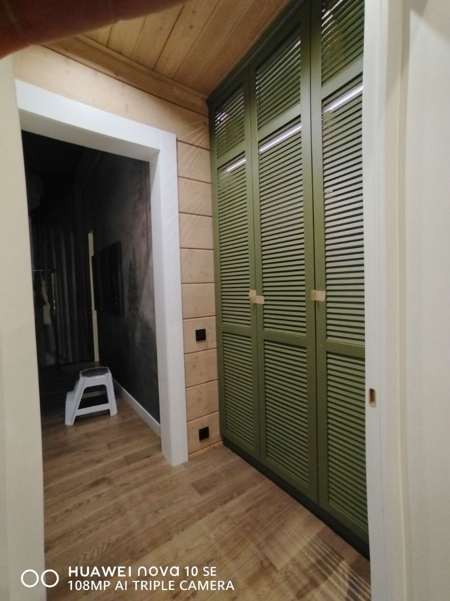
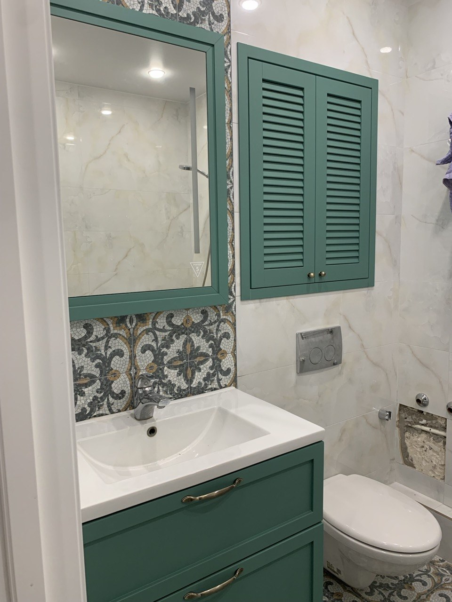

Жалюзийные фасады на заказ в Санкт-Петербурге
Изготавливаем жалюзийные фасады под индивидуальный размер для шкафов, гардеробных, ниш, технических зон и встроенной мебели. Работаем под конкретный проём, размеры и интерьер: подбираем материал, покрытие, цвет, фурнитуру и конструкцию под задачу помещения.
производство в СПб · расчёт по фото или размерам

Для каких задач подходят
Жалюзийные фасады используют там, где нужно закрыть хранение или техническую зону, но сохранить воздух, лёгкость и аккуратный внешний вид. Они востребованы в проектах, где важны практичность и эстетика.
Встроенные системы хранения в квартирах, домах и апартаментах.
Коммуникации, щитки, коробы и закрытые зоны.
Фасады для хозяйственных зон, стиральных и сушильных машин.
Закрыть оборудование с сохранением вентиляции.
Серийные фасады для коммерческих объектов.
Аккуратные фасады и панели под стиль интерьера.
Фото жалюзийных фасадов
В галерее собраны примеры фасадов, чтобы можно было посмотреть фактуру, ракурсы, формат установки и варианты использования в интерьере.




Почему выбирают жалюзийные фасады
Что влияет на расчёт
У фасадов нет универсальной цены: стоимость зависит от размера, количества, материала, покрытия, фурнитуры, сложности конструкции и монтажа.
Для расчёта отправьте фото или размеры
Можно написать в MAX или Telegram и приложить фото проёма, примерные размеры, количество фасадов, желаемый цвет и город. Этого достаточно, чтобы начать диалог и подготовить предварительный расчёт.
- 01Фото проёма или мебели
- 02Примерные размеры
- 03Количество фасадов
- 04Цвет / покрытие, если уже выбрали
- 05Нужен ли монтаж